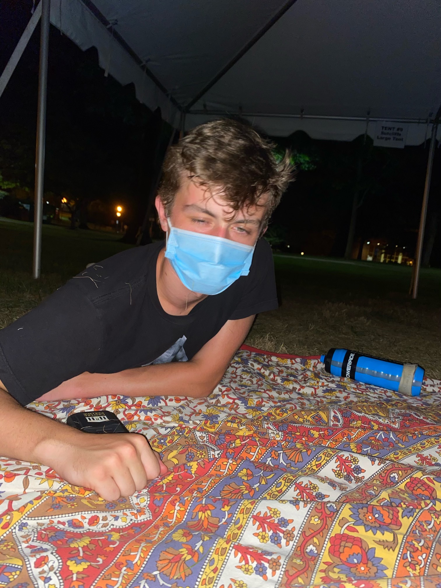
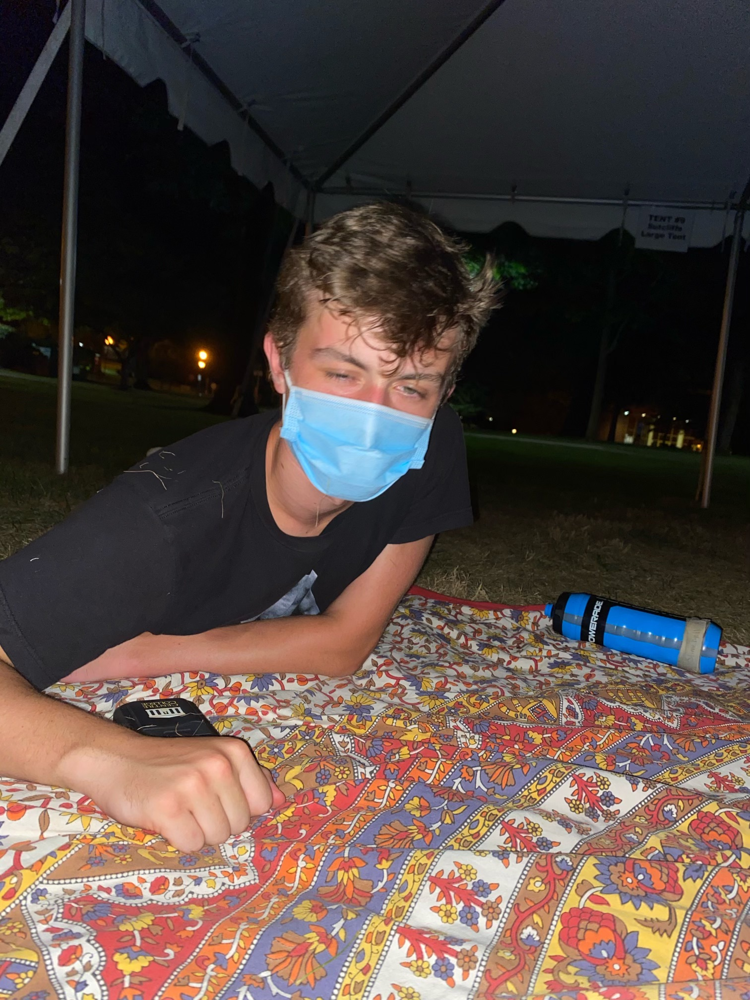

You can't go to the library because no one's allowed there. You have to stay in your room almost 24 over seven. We weren't even allowed out without a guide or like our whole building had to leave as one unit to walk somewhere. And then we could only walk back, only stay with each other. So it forced you to adapt to something you weren't used to. It also definitely hurt because of that. Six week span. I mean, for 3 or 2 of my classes, we cut 3 or 4 chapters of material. That was probably important information I know from my psychology class, which it was. I took 110 at that time. So I was in the intro, which is a four,a four credit class, meaning as a lab. And we just completely ignored the lab portion of the class, which is something that I guess might have been fun in person. Do a little more activities, but. It's just an experience, reallyBack to main page